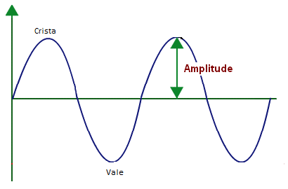

Ondas Mecânicas
Ondas mecânicas são perturbações que transportam energia através de um meio material, por exemplo: ondas marítimas, sísmicas e sonoras.
Ela pode acontecer somente num meio material, mas não transportam matéria e, sim, energia.
Essas perturbações acontecem na forma de pulsos, os quais são ondas de curta duração que se repetem com intervalos de tempo iguais, ou seja, em movimentos periódicos.
Como Calcular a sua Velocidade?
Para calcular a velocidade, usamos a seguinte fórmula:
Onde,
v = velocidade (m/s).
λ = comprimento da onda (m).
T = período da ondulação (s)
Além do período T e do comprimento λ (lambida), outra característica importante nas ondas é a amplitude (A).
A amplitude é o comprimento que um ponto realiza ao oscilar entre a posição de repouso e o ponto mais alto (crista da onda) ou o mais baixo (vale).
Frequência
A frequência é a quantidade de oscilações realizadas a cada unidade de tempo .A unidade de medida de frequência é o hertz (Hz).
A frequência f se relaciona com o período T segundo a equação:
Período do pêndulo
Para calcularmos o período de oscilação de um pêndulo simples,basta utilizar essa fórmula:
Onde,
T é o período, em segundos (s).
L é o comprimento do fio, em metros (m).
g é a aceleração da gravidade, em (m/s2). A gravidade da Terra é igual a 10.